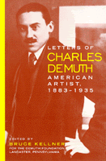

<body bgcolor="#FFFFFF" text="#000000" link="#0000FF" vlink="#CC0000" alink="#CC0000"><center><hr width="350" size="1" align="center" noshade>The correspondence of a celebrated 1920s artist with his famous contemporaries<hr width="350" size="1" align="center" noshade><p><a href="https://cdcshoppingcart.uchicago.edu/Cart/ChicagoBook.aspx?ISBN=9781566397803&&PRESS=temple" target="_top">Buy this book!</a> | <a href="https://cdcshoppingcart.uchicago.edu/Cart/Cart.aspx?PRESS=temple" target="_top">View Cart</a> | <a href="https://cdcshoppingcart.uchicago.edu/Cart/Cart.aspx?PRESS=temple" target="_top">Check Out</a></p><p></p></center><!--none//--><h1>Letters of Charles Demuth, American Artist, 1883-1935</h1>
<H2>With assessments of his work by his contemporaries: A. E. Gallatin, Angela E. Hagen, Marsden Hartley, Helen Henderson, Henry McBride, Carl Van Vechten, Rita Wells, Willard Huntington Wright</H2>
<h3>edited by Bruce Kellner</h3>
<P>cloth 1-56639-780-4 $74.50, Jun 00, <FONT COLOR=#990033>Available</FONT>
<br>paper 1-56639-781-2 $29.95, Jun 00, <FONT COLOR=#990033>Available</FONT>
<BR> 216 pp
5.5x8.25
1&nbsp;figure 1&nbsp;halftone
</P><P>Charles Demuth is widely recognized as one of the most significant American modernists. His precisionist cityscapes, exquisite flowers, and free-wheeling watercolors of vaudeville performers, homosexual bathhouses, and cabaret scenes hang in many of the country's most prestigious collections, including the Metropolitan Museum of Art, the Philadelphia Museum of Art, the Columbus Museum of Art, the Amon Carter Museum in Fort Worth, the Art Institute of Chicago, and in Demuth's Lancaster, Pennsylvania, family residence, now home of the Demuth Foundation. At a time when many American artists remained tied to Europe, Demuth "Americanized" European modernism.
<P>This collection of 155 of his letters offers valuable views of the arts and letters colonies in Provincetown, New York, and Paris. Besides offering information on Demuth's own works, the letters also shed light on the output of his contemporaries, as well as references to their trips, liaisons, and idiosyncrasies. Demuth numbered among his correspondents some of the most famous artists and writers of his time, inluding Georgia O'Keeffe, Eugene O'Neill, John Reed, Gertrude Stein, Alfred Stieglitz, Carl Van Vechten, and William Carlos Williams. In his travels in the United States and abroad, he encountered many other talented contemporaries: Peggy Bacon, Muriel Draper, Marcel Duchamp, the Stettheimer sisters, artists and writers, patrons, and gallery owners.
<P>Whether he is offering to pick up a copy of Joyce's <I>Ulysses</I> for Eugene O'Neill or trying to convince Georgia O'Keeffe to decorate his music room ("just allow that red and yellow 'canna' one to spread until it fills the room"), Demuth is always in the thick of art and literary life. Flamboyant in attire but descreet in his homosexuality, Demuth also reveals in his letters the life of a talented homosexual in the teens and twenties. With his best friends Robert Locher and Marsden Hartley, he circulated through the art colonies of Greenwich Village, Provincetown, and Paris, meeting everyone.
<P>The book also contains reprints of some short appraisals of Demuth and his work that were published during his lifetime, long out of print, including pieces by A. E. Gallatin, Angela E. Hagen, Marsden Hartley, Helen Henderson, Henry McBride, Carl Van Vechten, Rita Wells, and Willard Huntington Wright.
<BR>&nbsp;<h2>Excerpt</h2><P>Excerpt available at <a href="http://www.temple.edu/tempress">www.temple.edu/tempress</a></p>
<BR>&nbsp;<h2>Reviews</h2>
<p><I>"Editor Bruce Kellner, an emeritus professor of English at Pennsylvania's Millersville University, provides a lucid introduction to Demuth's life and to his work: this 'fashionably high-stepping strutter' may be in for a big, deserved revival."</I>
<br>&#151<b><I>Publishers Weekly</I></b>
<BR>&nbsp;<h2>Contents</h2><P>
<p>Acknowledgments
<br>Introduction
<br>A Note on Editing
<br>The Letters
<p>An Appreciative Appendix:
<br>What Is Happening in the World of Art &#150 Henry McBride
<br>Demuth &#150 Henry McBride
<br>The Underground Search for Higher Moralities &#150 Henry McBride
<br>Demuth &#150 Willard Huntington Wright
<br><I>from</I> Art and Artists in Review &#150 Helen Henderson
<br><I>from</I> Florine Stettheimer and Charles Demuth &#150 Carl Van Vechten
<br><I>from</I> American Water-Colourists &#150 A.E. Gallatin
<br>Demuth &#150 Henry McBride
<br>Charles Demuth &#150 A.E. Gallatin
<br>Water-Colours by Charles Demuth &#150 Henry McBride
<br>Demuth Watercolors and Oils at "An American Place" &#150 Angela E. Hagen
<br>Pen Portraits: Charles Demuth: Artist &#150 Rita Wellman
<br><I>from</I> Farewell, Charles &#150 Marsden Hartley
<br>Demuth Memorial Exhibition &#150 Henry McBride
<br>Index
</P><BR>&nbsp;<H2>About the Author(s)</H2>
<table><tr><td valign="top"><img src="/tempress/authors/1548_au.gif" height="90" width="75"></td><td width="100%" valign="middle"><p><B>Bruce Kellner</B> is Emeritus Professor of English, Millersville University, and a member of the Demuth Foundation Board of Directors. He is the author or editor of 10 other books.</P></td></tr></table>
<BR><H2>Subject Categories</H2>
<p><A HREF="/tempress/art.html" TARGET="_top">Art and Photography</a>
<BR><A HREF="/tempress/american.html" TARGET="_top">American Studies</a>
</p>
<p align="center"><a href="https://cdcshoppingcart.uchicago.edu/Cart/ChicagoBook.aspx?ISBN=9781566397803&&PRESS=temple" target="_top">Buy this book!</a> | <a href="https://cdcshoppingcart.uchicago.edu/Cart/Cart.aspx?PRESS=temple" target="_top">View Cart</a> | <a href="https://cdcshoppingcart.uchicago.edu/Cart/Cart.aspx?PRESS=temple" target="_top">Check Out</a></p><p><font face="Arial" size="1"><a href="copyright.html" onMouseOver="window.status='Web Copyright Policy';return true;" onMouseOut="window.status=''" title="Web Copyright Policy">&copy;</a> 2015 <a href="http://www.temple.edu" target="new" onMouseOver="window.status='Link to Temple University home page';return true;" onMouseOut="window.status=''" title="Link to Temple University home page">Temple University</a>. All Rights Reserved. http://www.temple.edu/tempress/titles/1548_reg.html</font></p>